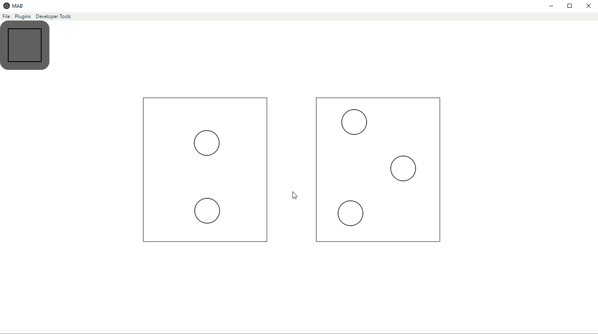

Thank you for choosing MAB for building your software deployment. MAB is a powerful software tool that assists end-users in creating parallel software deployments using the Madeus deployer paradigm. Some of the key highlights include:
The only configuration needed is the initial package installation as described in the "Installation" section at the MAB source code repository. To ease daily operation, there is an "Executables" folder in the downloaded repository. This folder contains double-click to run files. Please make a shortcut to the proper "executable" based on your OS and place that shortcut at your desired location. In the Icons folder there is an Amadeus icon you may use to change the shortcuts icon if you so desire.
NOTE: A command prompt/shell may persist during MAB's use when running MAB with an "executable". Do not close this window as MAB will close with it. The command prompt/shell will close automatically when you choose to close MAB.
The successful use of the MAB software is described following this section with GIF examples.
NOTE: There is an index associated with every place that does not allow for the creation of self loops or any sort of cycle to be created with transitions inside of any component. If MAB thinks you are trying to create a cycle inside the component of any kind, the destination place will highlight RED instead of GREEN.
PROVIDE dependencies:
USE dependencies:
NOTE: You can only create connections between dependencies of the same type. i.e. Data -> Data or Service -> Service.
NOTE: There should be one more file than the number of components that need to be saved. i.e. 4 components would equate to 5 files that need to be saved.
TBD